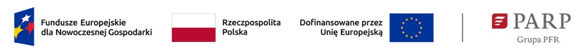

Informacje o realizowanym projekcie
BikeRC Prosta Spółka Akcyjna realizuje projekt pod tytułem „System Analityczny Biomechaniki Sportowców (SABAS)” o numerze umowy o dofinansowanie 16/I/FENG/PCI/2025 w ramach Programu Fundusze Europejskie dla Nowoczesnej Gospodarki 2021–2027, Priorytet II Środowisko sprzyjające innowacjom, Działanie 2.28 Startup Booster Poland.
Dofinansowanie projektu z UE
199 620,80 zł
Ogólna wartość projektu222 988,80 zł
Wydatki kwalifikowalne199 620,80 zł
Opracowanie, przetestowanie i wdrożenie innowacyjnego systemu monitorowania biomechaniki ruchu sportowców.
Przeprowadzenie testów prototypu systemu we współpracy z przyjaznymi testerami oraz weryfikacja działania w rzeczywistych warunkach treningowych.
Rozwijanie interfejsu użytkownika oraz testy funkcjonalne i operacyjne u pierwszych partnerów zewnętrznych.
Działania promocyjne wspierające wdrożenie, obejmujące kampanie marketingowe i współpracę z wybranymi klubami oraz sportowcami.
Klienci indywidualni – osoby uprawiające sport (ze szczególnym uwzględnieniem rowerzystów).
Kluby sportowe, w szczególności kluby kolarskie i salony rowerowe.
Obiekty sportowe: siłownie, kluby fitness, centra rehabilitacji.
Potencjalnie: środowisko naukowe oraz ośrodki zdrowia.
Udostępnienie szerokiemu rynkowi innowacyjnego narzędzia do monitorowania i analizy biomechaniki ruchu w czasie rzeczywistym.
Obniżenie kosztów profesjonalnej analityki ruchu oraz umożliwienie dostępu do tej technologii również amatorom.
Zwiększenie szans na prawidłowy trening, profilaktykę urazów oraz efektywną rehabilitację dzięki obiektywnym, powtarzalnym pomiarom.
Komercyjne wdrożenie systemu SABAS – łatwo dostępnego narzędzia do monitorowania i analizy ruchu.
Rozwój polskiej innowacji na rynku krajowym i zagranicznym (w szczególności w sektorze sportowym i rehabilitacyjnym).
Stworzenie referencyjnych modeli biomechanicznych na podstawie danych zebranych podczas współpracy z wybitnymi sportowcami.
Wprowadzenie nowych funkcjonalności i ekspansja na kolejne rynki (fitness, siłownie, ośrodki zdrowia).
Wzrost rozpoznawalności firmy BikeRC oraz transfer polskiej technologii na rynki zagraniczne.